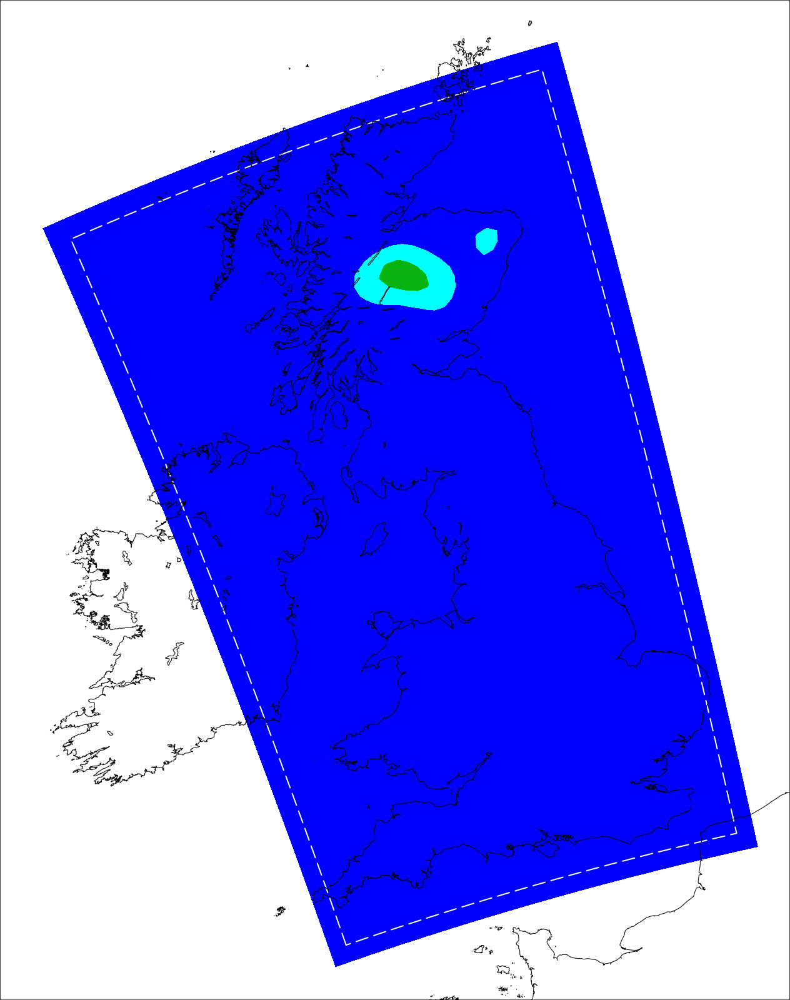
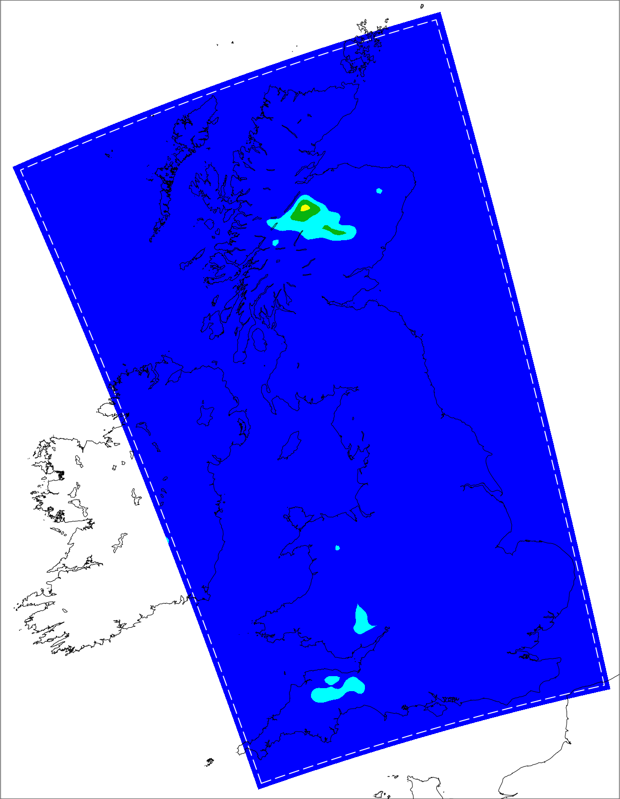

Blue Box Image Cropper
Blue Dominance Threshold:
50
Process Images
Original 1

Preview 1 (Detected Box)
Cropped 1
Click 'Process Images'
Original 2

Preview 2 (Detected Box)
Cropped 2
Click 'Process Images'